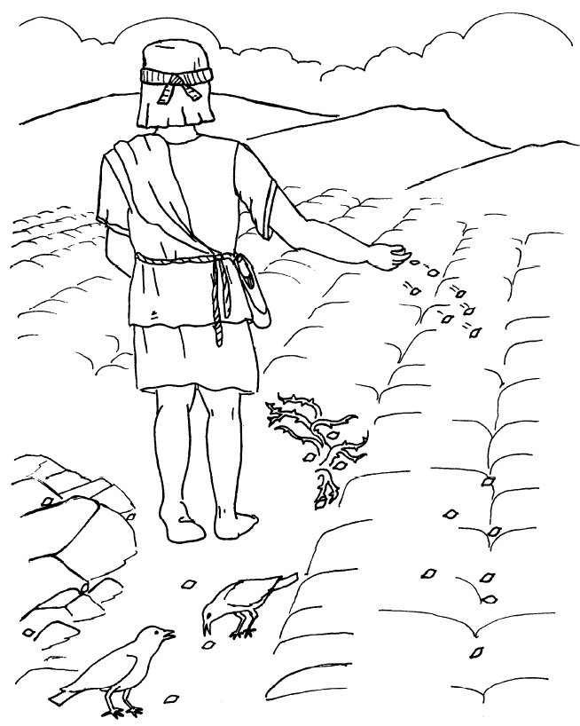

Mu Lubereberye Kyaali Kigambo

A Big Splash?
Buli December tutandika okusuubira ebikujjuko ebisinga obunene mu mwaka: Ssekukkulu! Amaduuka gonna gaaka n’amataala n’ebintu ebiyitibwa tinsel (kirabika buli mwaka nga bukyali n’okusooka), tusiba amataala okwetoloola ennyumba zaffe ne tuyooyoota omuti, era n’en- guudo z’ebifo bingi ebisika ziyaka n’amataala agayakaayakana okwe- tooloola ebizimbe bingi. Era ekisinga okusanyusa mu byonna? Ebirabo! Ffe kye tufuna? Kinaaba kye tubadde.

Omulyango Omusirifu Ennyo
kale, bwe kityo bwe kyaliwo emyaka 2,000 egiyise? Abantu baali balinze nga basuubira: ennyumba zaabwe zonna zaali ziyooyoot- eddwa nga basuubira okuzaalibwa kwa Yesu? Baali bagulidde munne ebirabo nga basuubira okuzaalibwa kuno okwali kumaze ebbanga nga kulindiriddwa? Bwe yazaalibwa, okulangirira kwafuluma mu nsi yonna nti Omulokozi yali azze ku nkomerero?
Si ddala.

Yesu bwe yazaalibwa mu Besirekemu, era eyitibwa Ekibuga kya Dawudi ( jjukira?), abantu batono ddala be baali bakimanyi ddala. Waaliwo Maliyamu, nnyina wa Yesu, ne Yusufu, omugole we. Abantu abaali bannannyini kiyumba ky’ente mu kiyumba ky’abagenyi Maliyamu ne Yusufu mwe baali basula oboolyawo baali bakimanyi nti omukazi oyo yali azadde, naye nga tekyalina makulu ga njawulo gye bali.
Naye waaliwo essanyu lingi mu ggulu, tumanyi, kubanga LUKA 2:8- 14 etugamba nti ekibinja ekinene ekya Bamalayika kyalabikira Abasumba abamu mu kiro Yesu we yazaalibwa. Tebakoma ku ku- langirira nti omwana omulenzi ayitibwa Yesu yazaalibwa, naye mu butuufu baalangirira nti ye Masiya abantu b’Abayudaaya gwe baali bamaze ebbanga nga balindirira!
Naye kijja kutwala emyaka emirala 30 nga tewali muntu yenna naye agenda kuzuula ekyo era.

Abasajja bana olw’emboozi
mu myaka egyaddirira mu kufa kwa Yesu, okuzuukira n’okulinnya mu ggulu, abasajja bana ab’enjawulo bwe baaluŋŋamizibwa okuwandiika ku bulamu bwa Yesu. Ebitabo ebina ebisooka eby’Endagaano Empya biyitibwa erinnya okuva mu basajja abawandiika ebikwata ku bulamu buno (okutwalira awamu biyitibwa Enjiri) .
Matayo ne Yokaana tebakiteesa na munne kiyinzika okuba nga tebamanyi muntu mulala yenna yali awandiika emboozi eno eya Yesu. Matayo luke ne Yokaana bayinza okuba nga baali bamanyi era ne batuuka n’okusoma Enjiri ya mark, abamanyi balowooza nti ye yali ebyafaayo bya Yesu ebyasooka okuwandiikibwa.

Naye enjiri ennya yawandiikibwa abantu bwe batunyumiza emboozi ekwata ku kintu ekyaliwo, The ebiseera ebisinga okulongoosa kiki mu ndowooza yaabwe n’ebitundu ebisinga obukulu kino kyali bwe kityo ku Matayo, Makko Lukka ne Yokaana abamu kuzingiramu ebibaddewo n’emboozi, abalala tebakola abamu okutuuka ne mu bbaluwa ey’enjawulo, order
Okugeza Matayo ne Lukka bokka be boogera emboozi eno ey’okuzaalibwa kwa Yesu. mpozzi ebirowoozo bya luke kyali kikulu abantu okumanya nti Yesu yazaalibwa omuwala Bikira Maria omugole wa Maria si bwe kyali. Enjiri ya Matayo etandikira ku muti gw’ekika kya Yesu. Ojjukira engeri mu kiseera ekyo edda katonda gye yasuubiza Ibulayimu nti ensi ejja kuweebwa omukisa okuyita mu kabaka agenda okuva mu bazzukulu be( Olubereberye 12:3)
Matayo afaayo okutulaga nti Yesu yali muzzukulu wa Dawudi obutereevu eyali a muzzukulu wa Ibulayimu Yesu obutereevu ye yali okutuukirizibwa kw’obunnabbi obw’edda. Mu nsonga ya Makko ne Yokaana kye kimu okutwala ng’ekikulu nti bwe baali bawandiika ku Yesu buli muntu ajja kumanya okutuuka ku kiki okwogera ku mulembe gwe Yesu yali wa ttutumu nnyo nnyo kale omuntu asobole okwegatta okutandika emboozi zaabwe eza Yesu n’ensonga bwe okutandika obuweereza bwe obw’emisuwa eyo Yesu bwe yali ng’alina emyaka nga 30.

Masiya gwe yali tasuubira
ddi lwe tunaayiga ku nnabbi eyalagula nti Isiraeri yandigudde mu asuli ne Babulooni era tuyiga nti bannabbi abo bennyini baali balagula nti kabaka masiya omulokozi yandivudde mu lunyiriri lwa Kabaka Dawudi. Nabbi bano ya- wa abayudaaya essuubi nti isiraeri ejja kufuuka ggwanga ddene, nti ekika kijja kujja okuwangula abalabe ba Isiraeri bonna n’okubafuula amaanyi amangi en- nyo agajja okufuga ensi.
Naye aba Yesu baali tebasoma bunnabbi bwonna ;oba, bwe baba nga bwali, baali tebategeera bubi nnyo ebimu ku byo. Bannabbi baawa ennyin- nyonnyola bbiri ku masiya Katonda gwe yali agenda okusindika. Omuntu yali mu kubeera mufuzi ow’amaanyi ddala. abayudaaya kye bataategeera nti kabaka ono yandivudde mu kifo ekitali kya njawulo nnyo era nti tajja kujja na ssanyu lingi (jjukira ekiro ekisirifu mu bethrehem entono etali ya maanyi?). Omuzannyo guno omupya gugenda kuba musajja amanyi sirrow, ennaku n’obulumi so si kitiibwa kya kabaka n’amaanyi.
Ng’abantu abaawanguddwa abaggwaamu amaanyi, Abayudaaya tebaali banoonya mi messaiah ng’omuntu omuwombeefu Yesu gwe yali: baali banoonya omuntu asinga nnyo oyo. Era bwe kityo bwe kyali nti Yesu bwe yajja n’abeera mu bo, tebaategeera masaya na

Enjigiriza ya Yesu
Jjukira nti Yesu yakulira mu kifo ekyali wansi w’obufuzi bw’ensi endala: mu kiseera kino we yali Obwakabaka bwa Rooma obw’Amaanyi Yesu yakulira mu Kibiina eky’enjawulo ennyo; abantu b’Abayudaaya baali ba ddiini banyiikivu nnyo era baliraanwa be baali balimi oba bavubi oba basuubuzi (joseph, bba wa nnyina, yali mubazzi mu mulimu gwe) oboolyawo olw’ensonga eno, yesu yagezaako okuyigiriza amazima ag’omwoyo ng’anyumya emboozi, eziyitibwa engero, ezitera okuzingiramu ebintu abantu. ekibiina kye kyandibadde kimanyidde era nga kitegedde:
- omulimi ng'asiga ensigo mu nnimiro ye(mathew13:2-23)
- omwana ajeemera bazadde be, naye n’akomawo gye bali nga yejjusa nnyo olw’ebibi bye(luke15:11-32)
- omusumba afiirwa emu ku ndiga ze (matayo 10:10-14).
Abafalisaayo
Mu kiseera kya yesu, bakabona (baibuli era ebayita abafalisaayo-ekigambo ekitegeeza "abeeyawudde") be baafuganga obulamu bw'abayudaaya obwa bulijjo. Ba- kabona baava mu kimu ku bika ekkumi n’ebibiri ebya isiraeri Katonda bye yali alonze mu ngeri ey’en- jawulo okukola omulimu ogwo: abaleevi (okuva mu kika kya levi). Baali bakitwala nga mulimu gwabwe okukuuma abantu b’abayudaaya obutabula nga bwe baali edda. gwali mulimu gwabwe gwe balowooza okusoma. Gwabadde mulimu gwabwe, balowooza, okusoma an okutaputa baibuli eri abantu( okujjukira bye twayogera emabegako ku Katonda okugenderera Baibuli eri buli muntu)
Yesu teyava mu kika kya levi kale Yesu teyali kabona.

Okubeera Rabbi, oba omusomesa w’amazima n’okumanya kwa Baibuli, omusajja omutwe okuyita mu kiseera ekiwanvu ng’atendekebwa mu ssomero ery’enjawulo erya balabbi
Yesu yali tannagenda mu Ssomero lya balabbi kale abafalisaayo tebaamutwalanga nti ‘alina ebisaanyizo’ okubeera bw’atyo. Kumpi okuva ku ntandikwa y’obuweereza bwe, Yesu yali mu butakkaanya n’abafuzi b’eddiini. Abantu bangi baakuŋŋaana okuwulira Yesu ng’ayigiriza. mu emu ku njigiriza ze ezisinga okumanyika eyitibwa okubuulira ku lusozi ( kuyinza okusangibwa mu Matayo 5 ne ruke 6), kumpi buli nsonga gye yayogera ng’akontana n’ebyo Abafalisaayo bye baakkiriza abantu.

ebimu ku birowoozo ebikulu Yesu bye yali ayagala abagoberezi be bayige bye bino:
- Katonda ayagala abantu era the ayagala bamwagale mu kuddamu. engeri emu ey’okulaga okwagala kwaffe eri Katonda kwe kugondera si nnukuta y’amateeka yokka wabula n’omwoyo. Kale, ng’oggyeeko okuba om- wesimbu, Yesu yagamba abagoberezi be okuba ab’ekisa, ab’ekisa era ab’ob- wenkanya.
- yesu ayagala abagoberezi be bamanyibwe olw’okwagala kwabwe: okwagala bakkiriza bannaabwe, okwagala n’abalabe. Katonda awaddeyo eri...
Ekisinga obukulu yesu kyeyayagala abagoberezi be bakimanye nti Ye, yesu yali mwana wa Katonda, era nti obulokozi okuva mu kibi buva mu ye yekka. olumu ku lunyiriri olusinga okumanyika mu baibuli lulangi- rira endagaano empya Katonda gye yali akola n’abantu, yokaana3:16:
kubanga Katonda yayagala nnyo ensi n’awaayo omwana we omu yekka, buli amukkiriza aleme kuzikirira wabula abeere n’obulamu obutaggwaawo
okulangirira kuno okuva eri Yesu kwali kwa Nkyukakyuka olw’ensonga bbiri: esooka, endowooza nti Yesu yali mwana wa Katonda yali tekkirizibwa eri Abayudaaya bangi omuntu omu yekka yandibadde atya Katonda? endowooza ey’okubiri abakulembeze b’eddiini ab’omu kiseera kya Yesu gye bataasobola kuk- kiriza kwe kuba nti obulokozi bwali tebukyali bwa Bayudaaya bokka. Yesu yagamba nti omuntu yenna amukkiririzaamu asobola okubeera omuwanvu eri Katonda
Abasaddukaayo
Abasaddukaayo ekibinja ky’Abayudaaya abamanyiddwa en- nyo, emirundi mingi nga bagagga, abaaliwo mu kiseera kya Yesu, baalina enteekateeka ey’engeri emu ey’ebyobufuzi n’Abaruumi, ne bafuna obuyinza obumu obw’ebyobufuzi. Abasaddukaayo oluusi baatwala omulimu gw’okusolooza emi- solo gy’Abaruumi okuva ku Bayudaaya bannaabwe, era emi- rundi mingi tebaali beesimbu ku nsonga eyo, nga kyetaagisa abantu okusasula ssente ezisukka ku ze baali babanja ddala basobole okukuuma omuga- bo ku bo bennyini. Abasad- dukaayo bangi ku bantu b’Abayudaaya baali batwalibwa ng’abawemu olw’enkolagana yaabwe ey’oku lusegere n’Abaruumi abaali bakyayibwa.
Emirundi mingi waaliwo okwogera ku bujeemu mu Bayudaaya; abaali banyiize olw’obuzibu bw’obufuzi bw’Abaruumi. abasaddukaayo baali bakitwala nga mulimu gwabwe okukuuma emirembe wakati wa douche n'Abaruumi .

Obuzibu obuli mu Yesu
nga bwe twalaba emabegako, Yesu yatambula ng’ayigiriza enkuyanja y’abantu n’okubunyisa amawulire amalungi eri buli muntu agakwata ku Katonda n’okwagala kwe. Kino Abafalisaayo tebaakisi- ima n’akatono; baali baagala okuba nga be bokka ab’obuyinza mu by’eddiini mu Bayudaaya. Yesu yalowooza nti abantu balowooza nnyo ku bintu eby’omwoyo okusinga kabona bwe yali akoze, era ne bamwagala olw’ekyo.

n’abasaddukaayo tebaayagala nnyo nkuyanja y’abantu Yesu gye yali asikiriza. ekibinja ky’abantu tekyasobola kufugibwa mangu. singa Yesu yali ayagala abantu abaali bamwetoolodde bamugoberere nga bajeemera Rooma, kiki kye baali bayinza okukola okukiziyiza?
Abasaddukaayo abapya nti n'ekibiina ekinene eky'Abayudaaya tekyali kigeraageranyizibwa ku bateeka wansi Obujeemu bw'abayudaaya, baali bagenda kubamenya ddala( era nga wayise emyaka nga 35 oluvannyuma lw'obulamu bwa Yesu, ekyo kyennyini kye baakola) Obuyinza bwabwe obw'e- byobufuziwould mean nothing, with the Abaruumi nate n’abasaddukaayo baali tebagenda kufiirwa maanyi gaabwe eri Nobody Like Jesus eyali azuukusa ebbinu!

naye ekintu ekisinga obubi ennyo Yesu kye yakola kwe kulangirira abantu nti mu butuufu yali mwana wa Katonda. Yesu yabagamba nti ye Masiya gwe baali bamaze ebbanga nga balindirira. Eri abafalisaayo kino kyali kuvvoola ( obutassa kitiibwa mu Katonda ekisukkiridde)! ander the Jewish law, gwali musango oguyinza okuggyibwako okufa. emirundi n’emirundi yesu yali akoze ekyamagero okuwagi- ra okwewozaako kwe nti ye messiaih. Yawonya abalwadde, n’alaba abazibe b’amaaso n’abalema ne bad- damu okutambula. yatuuka n’okukuza omusajja. okuva mu bafu.
Yesu yatunuulirwa ng’omutiisa eri abafalisaayo( kubanga yali aleetedde abantu okubuusabuusa obuyinza bwabwe) n’eri abasenze (kubanga yandiba ng’atiisatiisa n’amaanyi gaabwe) .

mu budde obutuufu abafalisaayo n’abasaddukaayo tebaali ba mukwano oba nga tebakolagana ekiro kimu Yesu bwe yali asaba, Yuda iskariyoti, omusajja eyali abadde mu kibinja kya Mikwano gya Yesu egy’oku lusegere (abayigirizwa be ekkumi n’ababiri) yakulembera ekibinja ky’Abafalisaayo n’abasenze okutuuka gye yali amanyi nti Yesu ayagala nnyo okusaba, olusuku lwa Gehtsemane. Yesu teyagaana kukwatibwa wadde nga yali akimanyi nti teyazza musango gwonna.
Yesu, abamulumiriza baamutwala ewa kayfa, kabona omukulu owa yeekaalu, okukola omusango ogw’ekyama ne bategeeza kafa nti Yesu yalina omusango gw’okuvvoola olw’okwewozaako nti ye Masiya.

bwe yali ayimiridde mu maaso ga kabona ono asinga obukulu, Yesu n'agamba nti "Nze masiya, era ojja kundaba nga ntudde ku mukono ogwa ddyo ogwa Katonda." (Makko 14:62 )
Newankubadde nga olw'abajulizi baali bakuŋŋaanyiz- iddwa okuwa "obujulizi" ku Yesu, kayfa yasalawo nti ekigambo kya yesu kyokka kyali kyatula omusango. Ensala ye yali nti yesu attibwe.
Abayudaaya tebaasobola kukola kibonerezo kya kufa nga tebakkiriziddwa gavana wa Rooma pilate. Kabona yaleeta Yesu mu maaso ga pilato era masiya ne bagamba nti, ekyo kye kimu n’okugamba nti yali kabaka w’Abayudaaya. ander amateeka g’Abaruumi tewali yali asobola kweyita kabaka okuggyako Kayisaali.
mu butuufu omugoba w’ennyonyi teyalowooza nti Yesu yali yeewozaako nnyo nti ye kabaka, okuva bwe kiri nti teyawaayo wadde okwewozaako ng’avunaanibwa. naye kabona Omuyudaaya baali bakakatira nti Yesu tumutte. ne bwe yabawa okulonda omutemu, barabbas, eyasingisibwa omusango oba okusumululwa Yesu abantu bonna ne baleekaana nti Yesu attibwe.

Yesu afa era n’azuukira
Okukomererwa ku musaalaba yali ngeri ya kibonerezo kya kufa ekyakozesebwanga Abaruumi. Yali ngeri ya nsonyi nnyo ey’okufa. Newankubadde nga Yesu atera okulagibwa mu by’emikono ng’ayambadde olugoye lw’omu kiwato, mu butuufu yaggyibwako engoye ze, ne kiba nti yali bukunya bonna balabe. Kyaswaza nnyo naddala kubanga okukomererwa kw’omusaalaba kwali kuterekeddwa Abaruumi ab’ebika by’abamenyi b’amateeka abasinga obubi.
Oluvannyuma lw’okukubwa ekiro, okusooka n’abamulumiriza Abayudaaya n’oluvannyuma abakuumi b’Abaruumi, Yesu yakolebwa okwetikka omusaalaba gwe yennyini okutuuka mu kifo we yali agenda okukomererwa. Yali munafu nnyo olw’okukubwa kwe kwonna ne kiba nti yali tasobola kugumiikiriza wansi w’obuzito bw’omusaalaba; omuddu gwe baayita mu kkubo yakolebwa okusitula omusaalaba gwa Yesu ku lulwe.
Bwe baatuuka mu kifo we yakomererwa, abakuumi b’Abaruumi ne bamukomerera emikono gya Yesu ku musaalaba. Olwo ne bazannya zzaala olw’engoye ze baali bamuggyeko.
Wadde ng’ebiseera ebisinga kyatwalanga ennaku eziwerako ng’abonaabona okw’amaanyi okufiira ku musaalaba, ebiwundu bya Yesu n’okufiirwa omusaayi okuva mu kiro ekyakeesezza olwaleero oboolyawo byayanguyira okufa kwe. Yafa ku lunaku lwe lumu lwe yakomererwa ku musaalaba.

Nga mikwano gya Yesu egisinga gyali gyamuvaako bwe yakwatibwa mu Lusuku Gesusemane, waaliwo omusajja ayitibwa Yusufu ow’e Alimateya eyalina obuvumu okugenda ewa Piraato n’asaba omulambo gwa Yesu gusobole okuziikibwa obulungi .
Omulambo gwa Yesu yaguzinga mu bafuta n’aguteeka mu ntaana eyayolwa mu lwazi. Oluvannyuma yayiringisizza ejjinja eddene ku mulyango n’agenda.
Yesu yali agezezzaako okugamba abayigirizwa be emirundi mingi nti yandibadde alina okufa nga ssaddaaka esembayo olw’ebibi by’abantu, naye nga tebamutegeerangako. Bwe kiba nti Yesu yali Mwana wa Katonda, ne balowooza nti, bwe kiba nti ye Masiya Katonda gwe yasuubiza, yandifudde atya?
Ku lunaku olwokusatu nga Yesu amaze okufa, abamu ku bakazi abaali mikwano gye baagenda mu ntaana ye. Yali mpisa ya Bayudaaya okusiiga omulambo gw’omugenzi n’eby’akaloosa ebimu eby’enjawulo. Bwe baali bagenda, beebuuza bokka na bokka engeri gye banaatambuzaamu ejjinja eryali liyiringisiddwa mu maaso g’entaana.

Abakazi bwe baatuuka, ne beewuunya nnyo okusanga ng’ejjinja lyali liyiringisibwa dda era ng’entaana teriimu bantu!
Malayika, eyali atudde omulambo gwa Yesu we gwali, n'abagamba nti, "Temutya! Yesu azuukidde mu bafu, nga bwe yagamba nti yandikoze!" Malayika yagamba abakazi bano okuddayo eri mikwano gyabwe bababuulire amawulire amanene nti Yesu yazuukira mu bafu. (Makko 16:6-7)
Nga Abayudaaya bwe bakuza Okuyitako buli mwaka okujjukira okusumululwa kwabwe okuva mu buddu mu Misiri, Abakristaayo bakuza Ssande ya Paasika ng’ekintu ekisinga ekitiibwa mu byafaayo: Yesu yali azuukidde mu bafu, ng’awangula amaanyi g’okufa ku bantu era n’atuwa okusonyiyibwa ebibi byaffe emirembe gyonna !
Mu butonde, mikwano gya Yesu tebaasobola kukkiriza bwe baawulira nti Yesu tali mu ntaana ye.
Naye Yesu yalabikira abayigirizwa ekkumi n’omu abaali basigaddewo emirundi egiwerako oluvannyuma lw’okuzuukira kwe. Yamala ebiseera bingi ng’ayogera nabo ku ngeri gye yali atuukirizza obunnabbi bungi nnyo, era amaaso gaabwe ne gazibuka ku nkomerero eri amazima gonna Yesu ge yali agezezzaako okubayigiriza nga tannakomererwa. (Lukka 24:27)

Yesu alinnya mu ggulu
Yesu yagenda mu maaso n’okulabikira abayigirizwa ab’ekiseera eky’ennaku 40 oluvannyuma lw’okuzuukira kwe omulundi gumu mu kijjulo kye yali abagabana n’abagamba obutava mu Yerusaalemi balabe omutwe nga gufunye ekirabo ky’Omwoyo Omutukuvu era nga yabasuubiza ( Yokaana 14:16)
ku kifo ekyasembayo Yesu bwe yabalabikira bo abayigirizwa ne bamubuuza oba kati yali agenda kuz- zaawo Isirayiri mu kitiibwa kyayo ekyasooka Yesu n’addamu nti yayita yokka nti taata yeetaaga okuman- ya eky’okuddamu era nga bonna bayimiridde awo naye Yesu n’atandika okusituka waggulu naffe okuva gyebali bo abayigirizwa baatunula ne batunula ne balaba the tebakyasobola kulaba Yesu kubeera ne ki- taawe naye emboozi eno teyakoma awo mu butuufu singa yali ntandikwa yokka.